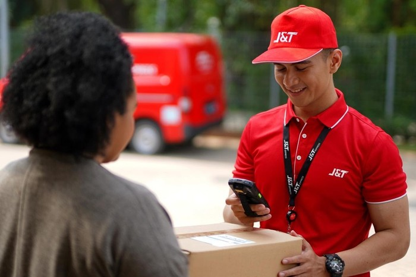
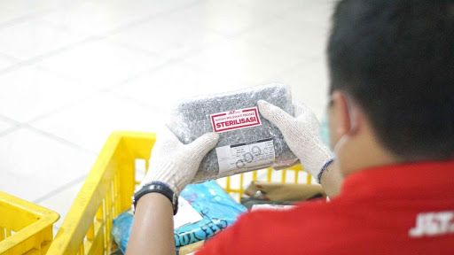

Layani Pengiriman Tanpa Libur, Volume Pengiriman J&T Express Naik 50%

Sumber :https://www.detik.com/
Sebagai perusahaan jasa pengiriman di Indonesia yang fokus melayani pengiriman transaksi e-commerce, J&T Express mengalami kenaikan signifikan pada momentum bulan Ramadhan 2020. Hal tersebut disebabkan oleh pengiriman yang tetap aktif berjalan selama momen besar tengah tahun ini. Lonjakan ini terlihat pada pada volume pengiriman hingga 3 juta paket per hari termasuk pada puncak Hari Raya Idul Fitri yang lalu.
"Sejak memasuki Ramadhan 2020 kami prediksi akan ada peningkatan yang cukup besar karena kita lihat di masa pandemi ini terjadi peningkatan transaksi online, tercatat sejak minggu ketiga bulan Mei kenaikan pengiriman sekitar 50% dari Lebaran tahun lalu. J&T Express sendiri, sebagai jasa pengiriman yang sedari awal berkomitmen untuk melayani pengiriman tanpa libur telah menunjukkan sumbangsihnya dalam melayani kebutuhan masyarakat, termasuk mendukung perputaran ekonomi melalui pengiriman paket dari transaksi jual beli online," ujar CEO J&T Express, Robin Lo dalam keterangan tertulis
Transaksi pengiriman dari e-commerce masih mendominasi selama Ramadhan hingga Lebaran. Permintaan pengiriman yang melonjak merupakan imbas dari kondisi di mana adanya peraturan pemerintah yang mengimbau masyarakat untuk beraktivitas dari rumah dan meniadakan mudik.
Sementara itu, tradisi lebaran yang masih melekat dengan euforia berbelanja membuat situs belanja online dari segala marketplace dibanjiri pemesanan. Hal ini tentu tak lepas dari kebutuhan jasa pengiriman. Adapun fashion, gadget dan produk kecantikan masih menjadi kategori yang mendominasi transaksi di bulan Ramadhan

Memprediksi adanya kenaikan pengiriman, J&T Express telah melakukan persiapan sebagai langkah antisipasi saat terjadi lonjakan pengiriman saat lebaran. Selain menambah jumlah armada dan karyawan agar operasional tetap berjalan optimal, J&T Express juga mengerahkan fasilitas mesin sortir otomatis.
Mesin ini mampu menyortir 30.000 paket per jam dengan 108 destinasi. Tak hanya itu, J&T Express juga sedang melakukan uji teknologi mesin sortir otomatis dua tingkat terbaru yang dimiliki dengan kemampuan menyortir hingga 1,5 juta paket per hari.
Pencapaian tersebut tentu tidak hanya datang dari persiapan transportasi dan operasional saja, namun juga kesiapan SDM yang disiplin dan bekerja maksimal. Dalam hal ini J&T Express mengutamakan kesehatan dan kenyamanan karyawannya di tengah situasi yang tak biasa.
Setiap karyawan diimbau untuk menjalankan protokol kesehatan kerja guna menjaga kenyamanan pelanggan saat menerima paketnya. Dengan penerapan protokol tersebut serta peningkatan yang dicapai, J&T Express diharap dapat selalu memberikan pelayanan jasa kirim terbaik di Indonesia.
kembali


 Copyright@2020
Copyright@2020